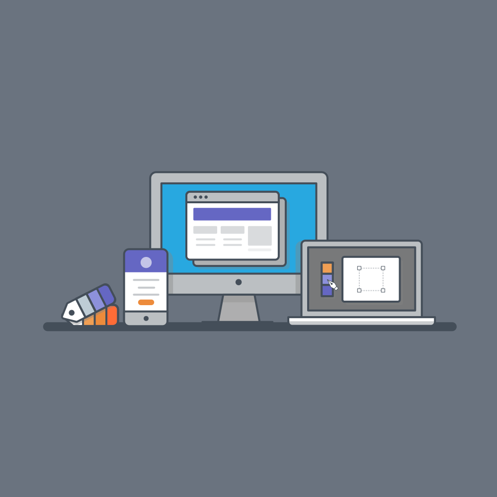

Design
Approach
High
Fidelity Wireframes


Category Web DesignUI Design
Project Overview
The goal of this project is to create a clone of JsDelivr, a popular open-source CDN (Content Delivery Network), as a portfolio project to showcase your UI design skills. The JsDelivr clone will focus on the front-end aspect, providing an intuitive and user-friendly interface for users to search, select, and obtain links for various libraries and packages hosted on the CDN.High Fiedlity Woreframes for JsDelivr Clone
Takeaways:
⏭User Interface Design: I have gained hands-on experience in designing user interfaces that are visually appealing, intuitive, and user-friendly. I created well-structured layouts, chose appropriate color schemes, and optimized the UI for different devices.
- User Interface Design:I have gained hands-on experience in designing user interfaces that are visually appealing, intuitive, and user-friendly. I created well-structured layouts, chose appropriate color schemes, and optimized the UI for different devices.
- Interactivity and User Experience: I incorporated interactive elements, such as search functionality and dynamic content loading, to enhance the user experience and provide a seamless browsing experience for users. I gained insights into user behavior and preferences.
- Design Documentation: I documented my design process, including wireframes and design mockups, to effectively communicate my design decisions, thought processes, and the rationale behind my design choices.
- Portfolio Showcase: I completed this project, providing me with a tangible piece of work to showcase in my portfolio. It demonstrates my ability to create visually appealing and functional user interfaces, highlighting my UI design skills to potential employers or clients.
- Continuous Learning: Throughout the project, I encountered challenges and had opportunities to learn new techniques, explore different design patterns, and enhance my skills in UI design. I embraced the learning journey and used it as a stepping stone to continue growing as a UI designer.
BACK TOP